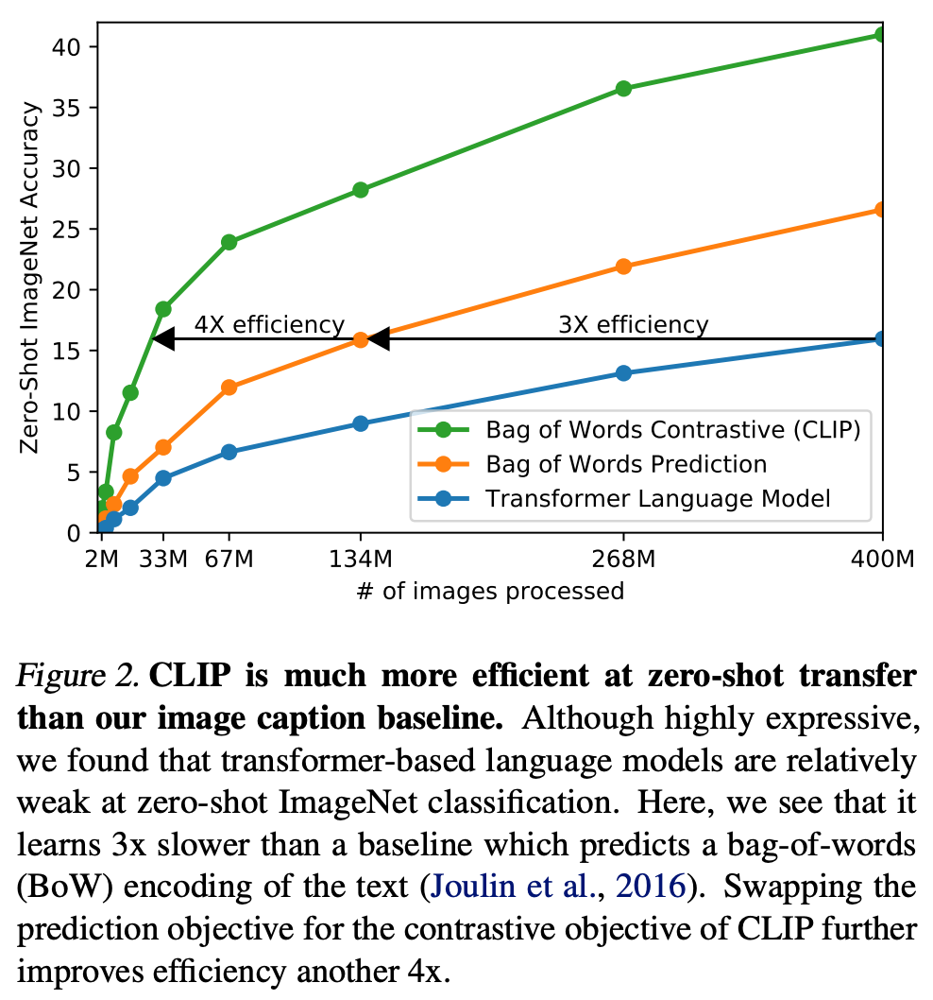
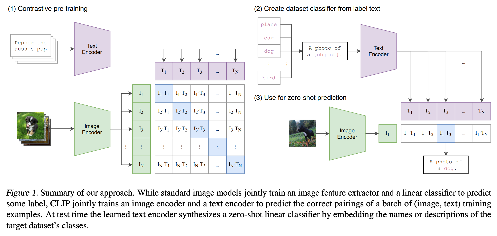

3 2021 CLIP: Contrastive Language Image Pretraining
- SOTA computer vision systems are trained to predict a fixed set of predetermined object categories.
-
We demonstrate that the simple pre-training task of predicting which caption goes with which image is an efficient and scalable way to learn SOTA image representations from scratch on a dataset of 400 million (image, text) pairs collected from the internet.
-
Recent work in contrastive representation learning for images has found that contrastive objectives can learn better representations than their equivalent predictive objective (Tian et al., 2019).
-
Other work has found that although generative models of images can learn high quality image representations, they require over an order of magnitude more compute than contrastive models with the same performance (Chen et al., 2020a).
-
Noting these findings, we explored training a system to solve the potentially easier proxy task of predicting only which text as a whole is paired with which image and not the exact words of that text.


- Given a batch of \(N\) (image, text) pairs, CLIP is trained to predict which of the \(N \times N\) possible (image, text) pairings across a batch actually occurred.
- To do this, CLIP learns a multi-modal embedding space by jointly training an image encoder and text encoder to
- maximize the cosine similarity of the image and text embeddings of the \(N\) real pairs in the batch while
- minimizing the cosine similarity of the embeddings of the \(N^2 − N\) incorrect pairings.
- We optimize a symmetric cross entropy loss over these similarity scores.
- To do this, CLIP learns a multi-modal embedding space by jointly training an image encoder and text encoder to
# Figure 3. Numpy-like pseudocode for the core of an implementation of CLIP.
# image_encoder - ResNet or Vision Transformer
# text_encoder - CBOW or Text Transformer
# I[n, h, w, c] - minibatch of aligned images
# T[n, l] - minibatch of aligned texts
# W_i[d_i, d_e] - learned proj of image to embed
# W_t[d_t, d_e] - learned proj of text to embed
# t - learned temperature parameter
# extract feature representations of each modality
I_f = image_encoder(I) #[n, d_i]
T_f = text_encoder(T) #[n, d_t]
# joint multimodal embedding [n, d_e]
I_e = l2_normalize(np.dot(I_f, W_i), axis=1)
T_e = l2_normalize(np.dot(T_f, W_t), axis=1)
# scaled pairwise cosine similarities [n, n]
logits = np.dot(I_e, T_e.T) * np.exp(t)
# symmetric loss function
labels = np.arange(n)
loss_i = cross_entropy_loss(logits, labels, axis=0)
loss_t = cross_entropy_loss(logits, labels, axis=1)
loss = (loss_i + loss_t)/2
- In Figure 3 we include pseudocode of the core of an implementation of CLIP.
- To our knowledge this batch construction technique and objective was first introduced in the area of deep metric learning as the multi-class N-pair loss Sohn (2016), was popularized for contrastive representation learning by Oord et al. (2018) as the InfoNCE loss, and was recently adapted for contrastive (text, image) representation learning in the domain of medical imaging by Zhang et al. (2020).
1. Setting up the Embeddings
Let's say we have a batch of \(N\) pairs of (image, text).
- Image Matrix (\(I\)): The image encoder processes the \(N\) images and outputs a matrix of visual embeddings, \(I \in \mathbb{R}^{N \times d}\), where \(d\) is the embedding dimension.
- Text Matrix (\(T\)): The text encoder processes the \(N\) captions and outputs a matrix of textual embeddings, \(T \in \mathbb{R}^{N \times d}\).
Before doing anything else, CLIP normalizes these vectors to have a length of 1 (L2 normalization), which means calculating their similarity is as simple as taking a dot product.
2. The Similarity Matrix
CLIP computes the cosine similarity between every image and every text description in the batch by multiplying the matrices:
This results in an \(N \times N\) matrix \(A\), where the entry \(A_{i,j}\) represents the similarity score between image \(i\) and text \(j\).
- The Diagonal (\(i = j\)): These are the correct pairs (e.g., Image 1 matched with Text 1). We want these scores to be as high as possible.
- The Off-Diagonal (\(i \neq j\)): These are the incorrect pairs (e.g., Image 1 matched with Text 2). We want these scores to be as low as possible.
To control how sharp or smooth the model's predictions are, CLIP multiplies this matrix by a learnable temperature parameter, \(e^\tau\).
3. The Loss Function (InfoNCE)
CLIP minimizes the loss across two directions simultaneously: Image-to-Text classification and Text-to-Image classification. It uses a standard Cross-Entropy loss on both rows and columns.
Image-to-Text Loss (Row-wise)
For a specific image \(i\), the probability that it matches text \(j\) is calculated using a softmax function over the row:
The loss for this row is the negative log-likelihood of picking the correct text (\(i=j\)):
Text-to-Image Loss (Column-wise)
Similarly, for a specific text \(j\), the loss for finding the right image over the column is:
Total symmetric loss
The final loss that CLIP minimizes via gradient descent is the average of these two directional losses: